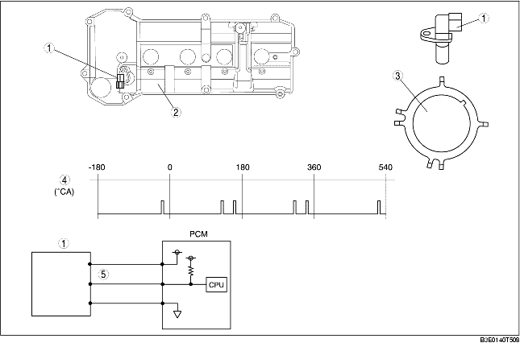

• The CMP sensor is installed at a 30° tilt to the cylinder head cover.
• The CMP sensor detects six pulses with one rotation of the camshaft by the projections set on the intake-side camshaft.
• A GMR element has been adopted.

.